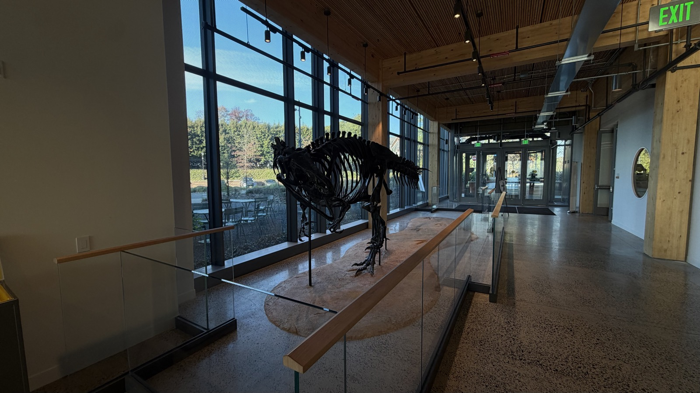

Al the Allosaurus
Al is a 40-foot meat-eating dinosaur that lived about 150 million years ago in what is now Utah. In 2024, Al was taken apart, trucked to Canada, and rebuilt in a new pose for this building. That trip raises a question: would a digital Al on a screen be better for the planet, and what would people lose?
Find it
Where to find it: Enter Briger Hall from Roper Lane. Al stands just inside that entryway, behind a glass railing along the tall windows. [7] Next to the skeleton, look for the Geosciences poster "The Life and Afterlife of Al, the Princeton Allosaurus." [8]

Look closely: Start with the tail. Follow it from the tip, forward to the hips, and then to the head. Is the tail dragging on the floor, or is it held in the air? Then look at the bones themselves: do they all match in color, or do some look darker or lighter than others?
Why is it interesting?
Our observation: Al is not the only dinosaur in the building. In a hallway elsewhere in Briger Hall, we found a dinosaur skull on display by itself, with no name, no label, and no sign of any kind. We wondered whether it could be connected to Al: another bone from the same Utah quarry, a cast, or something unrelated. We could not tell. Al comes with a famous name and an 80-year story, while the skull comes with nothing, and that made us notice how much of what we feel about a fossil comes from the story attached to it.
Al is not one animal. A Princeton team led by graduate student W. Lee Stokes dug at the Cleveland-Lloyd Dinosaur Quarry in Utah from 1939 to 1941, and the skeleton was assembled from bones of several individuals. [1] The bones come from the Morrison Formation, rock laid down on a huge, fairly dry floodplain in the Late Jurassic, a world with a very different climate from New Jersey today. [3]
Al went on display in Guyot Hall in 1961 and stayed in the same pose until October 2024, when the skeleton was taken apart and shipped to Research Casting International in Canada for cleaning, repairs, and a new pose. Newer research shows Allosaurus held its tail horizontally instead of dragging it. [1] The head, tail, and hind legs were removed and packed, and the rest was wrapped and loaded onto a truck. The new mount has an external frame, so researchers can remove single bones to study them. [2] According to the poster next to Al, the old mount was photographed and 3-D scanned before it came apart, Al spent the winter at Research Casting International in Ontario, and the skeleton was reassembled in Briger Hall from August 4 to August 8, 2025. The poster also notes that more than 12,000 bones have been dug out of the Cleveland-Lloyd Quarry and are on exhibit in more than 65 museums worldwide. [8]
What if / What might change?
Hypothetical alternative
Imagine Princeton never sent Al to Canada. The real bones go into research storage on campus, and in Al's place, visitors find a large screen showing a 3-D model of the skeleton. This is not far-fetched: Al was 3-D scanned before being taken apart. [8] The scan shows the old pose, though, so someone would have to correct the model.
For the environment: The screen avoids the truck trips, but it is not free. It needs electricity every day, and it has to be manufactured and eventually replaced. Our rough estimate: one diesel truck driving 800 to 1,800 miles releases about 1 to 2.3 metric tons of CO2, using EPA emission factors for heavy trucks. [4] A 1-kilowatt screen running 12 hours a day uses about 4,380 kilowatt-hours a year, which is about 1.2 metric tons of CO2 on our regional grid. [5] So in our estimate, one or two years of screen time matches the whole trip, and the screen keeps running after that.
For people: Al's new frame was built so researchers can remove individual bones for study. A screen alone could not offer that. [2] Real objects also seem to change how visitors engage: in one small study, families talked more about sensory details in a real permafrost research tunnel than in a replica of it, while their conceptual talk was similar in nature. [6] A screen would give up some of that physical presence, but it could do things a mount cannot, like showing Al's old and new poses side by side, or marking which bones came from which animal.
What we do not know: The number of trucks, the distance, and the size of the screen are all our assumptions. We did not count making the screen, Al's own lights, or storing the bones. And we cannot say how much of what a visitor feels comes from the bones being real, and how much comes from the story behind them.
Show how you know
- Demara White, Princeton Office of Communications. Guyot Hall's Allosaurus Gets a Facelift. December 9, 2024. Supports the dig history, composite skeleton, 1961 display, and the 2024 restoration and re-pose.
- Brett Tomlinson, Princeton Alumni Weekly. A New Home and Pose for Guyot's Allosaurus. November 26, 2024. Supports how Al was packed and shipped and the removable external frame.
- William W. Warner '43, Princeton Alumni Weekly. How a Dinosaur From the Utah Desert Came to Princeton. Originally 1996, republished March 24, 2026. Supports the Morrison Formation setting and the 40-foot length.
- U.S. Environmental Protection Agency. GHG Emission Factors Hub. Supports the CO2 per mile factor for heavy trucks used in our trip estimate.
- U.S. Environmental Protection Agency. Emissions & Generation Resource Integrated Database (eGRID). Supports the CO2 per kilowatt-hour factor for electricity used in our screen estimate.
- Carsten Conner and Perin. Learning from the real versus the replicated: a comparative study. International Journal of Science Education, Part B, 2020. Supports the finding that families talked more about sensory details in a real tunnel than in its replica.
- Brett Tomlinson, Princeton Alumni Weekly. A Hub for What's Next. March 27, 2026. Supports Al's location near the Roper Lane entryway of Briger Hall.
- Princeton University Department of Geosciences, compiled by Laurel P. Goodell. "The Life and Afterlife of Al, the Princeton Allosaurus." Poster on display next to Al in Briger Hall, viewed November 2026. Supports the 3-D scan, the timeline of the restoration and reinstallation, and the number of Cleveland-Lloyd bones in museums.
Listen and look
Read the complete audio transcript
You're listening to an AI-generated guide to Al, the Allosaurus in Briger Hall. Stand where you can see the whole skeleton.
Start with the tail. Follow it from the tip, forward to the hips, and then to the head. Is the tail dragging on the floor, or is it held in the air? Keep your answer in mind, because that tail is part of why Al went on a long trip.
Al's story begins about 150 million years ago, but Al isn't really one animal. These bones come from several Allosaurus individuals, dug up at a quarry in Utah starting in 1939. They went on display at Princeton in 1961. Later, research showed that Allosaurus held its tail horizontally and didn't drag it. So in 2024, Al was taken apart, wrapped, and shipped to Canada for restoration, then came back to this building in a new pose.
Now for a thought experiment. This part is hypothetical. Imagine that Princeton never sent Al to Canada. The bones go into research storage on campus, and right here, you find a large screen showing a 3-D model. That isn't far-fetched, because Al was scanned in 3-D before it was taken apart. The scan shows the old pose, though, so someone would have to correct it.
Would that be better for the planet? Maybe not. The screen avoids the long truck trips, but it needs electricity, and it has to be manufactured and eventually replaced. We made a rough estimate using EPA emission factors. One truck driving 800 to 1,800 miles releases about 1 to 2.3 metric tons of carbon dioxide. A 1-kilowatt screen running 12 hours a day is responsible for about 1.2 metric tons a year. So in our estimate, one or two years of screen time matches the trip.
There are human tradeoffs too. Al's new frame was designed so researchers can remove individual bones for study, and a screen alone couldn't offer that. In one small study, families talked more about sensory details at a real permafrost tunnel than at its replica, though their conceptual talk was similar in nature. A screen would give up some of that physical presence, but it could do things a mount can't, like showing Al's old and new poses side by side, or marking which bones came from which animal.
Here's what we honestly don't know. The number of trucks, the distance, and the size of the screen are all our assumptions. We didn't count making the screen, Al's own lights, or storing the bones. And we can't say how much of what you feel right now comes from these bones being real, and how much comes from the story you just heard.
So before you walk on, look at Al once more. If Al were a perfect image on a screen instead of bones in this room, what would you lose, and would that be worth what it takes to keep the bones here?
Consider: If Al were a perfect image on a screen instead of bones in this room, what would you lose, and would that be worth what it takes to keep the bones here?